1. 目录
2. source insight
2.1. 优缺点：
优点：
1、极优：可以source 两个完全不同路径下的代码 （自然，可以取整个aosp多个小部分代码）。AS的source code 必须在工程目录下！！！
2、内存使用是AS的二十分之一 极优
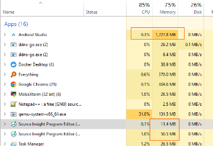
3、
导入整个framework代码，才占100M----------> 太优秀了所以，一下子，可以导入整个framework（只是可能搜索的范围大了一些）
3、可以同时java和cpp同时跳转！ 极优
4、不需要像AS与clion，需要事先搭建一个可以编译环境，然后copy代码
5、对于远程服务器代码，不需要copy！！！！（由第一点决定！！！） 极优
6、看代码大杀器-----java、cpp、c同时OK
7、在看代码的过程中，可以随时添加source 文件，以及remove 部分文件（比如test目录）-----> 优秀
缺点：
断点调试不行？------> 办法：与AS结合使用！
2.2. 新建项目
参考：https://blog.csdn.net/zyhse/article/details/122966714
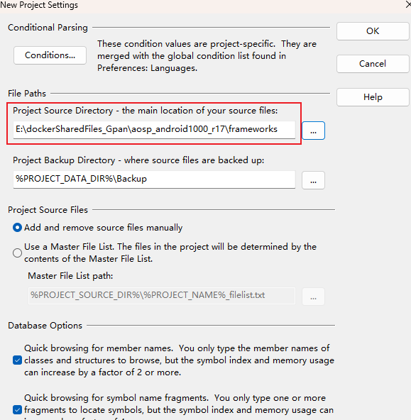
注意：
这里是服务器目录（代码目录），可以与工程目录，不是同一个，非常优
2.2.1. 随时按需添加/移除
--------------> 过程中，随时添加：
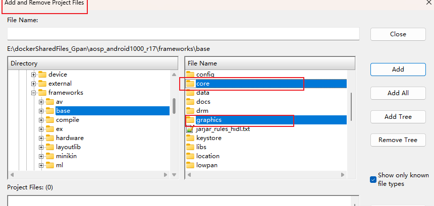
移除：
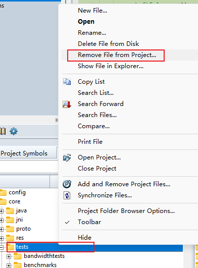
2.2.2. add文件之后一定要sync，才能跳转
重点：
1、需要sync(否则，两个文件之间无法跳转)
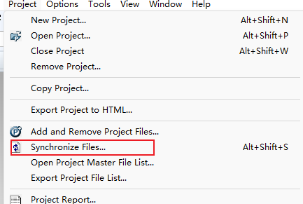
2、第一次解析所有文件，否则有些不能跳转：
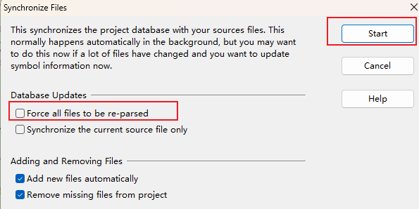
2.3. 优点之 增量添加文件--------增量解析
缩短解析时间：
增量添加文件后，只需要对adding fies进行解析即可，快！！！
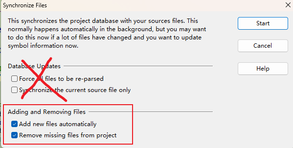
2.4. cpp文件大部分函数无法跳转（部分宏无法识别导致的）
现象：部分函数和类 是黑色的，无法跳转（但是存在这个类以及函数）
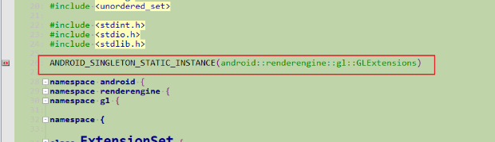
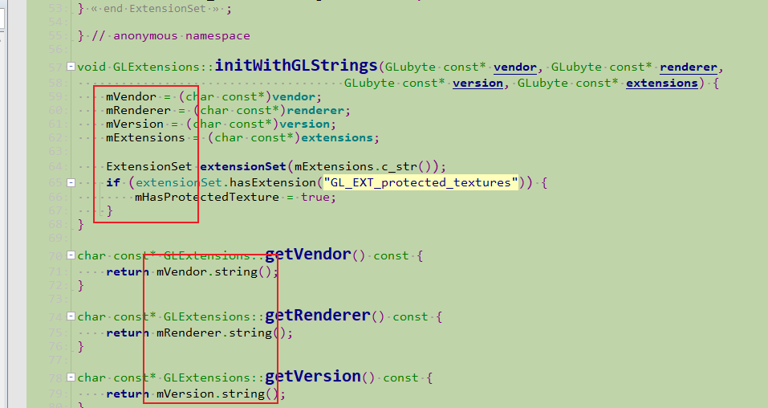
-根因：SI不识别部分宏，误认为是函数 -------------> 导致整个文件无法解析，大量黑色！！！
比如：上面的ANDROID_SINGLETON_STATIC_INSTANCE
方法一（不好）：
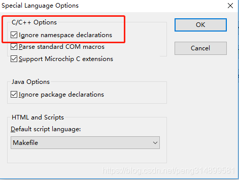
缺点： 1、修改后，该文件可以跳转，但会造成其他文件不可跳转
2、不是正规做法：cpp依赖namespace
方法二：
根因是不能识别宏，告诉SI这不是宏------------>注释掉有问题的宏
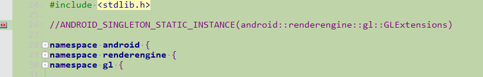
小缺点：必须修改源码 ---------> 当SI打开的是 正在编译的源码，就编译不过
则：需要copy一份代码修改
方法三(极优)：
根因是不能识别宏，告诉SI这是宏------------>C.tom 文件中说明
// C:\Users\Administrator\Documents\Source Insight 4.0\C.tom ; Misc下新增 ANDROID_SINGLETON_STATIC_INSTANCE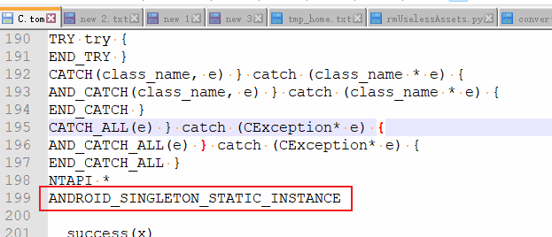
; C Token Macros
; These macros are expanded by Source Insight prior to parsing C and C++ files.
; AtlCom Property Map
BEGIN_PROPERTY_MAP(theClass)
BEGIN_PROP_MAP(theClass)
PROP_ENTRY(szDesc, dispid, clsid)
PROP_ENTRY_EX(szDesc, dispid, clsid, iidDispatch)
PROP_PAGE(clsid)
PROP_DATA_ENTRY(szDesc, member, vt)
END_PROPERTY_MAP()
END_PROP_MAP()
; COM Map
BEGIN_COM_MAP(x)
DECLARE_GET_CONTROLLING_UNKNOWN()
_ATL_IIDOF(x)
COM_INTERFACE_ENTRY_BREAK(x)
COM_INTERFACE_ENTRY_NOINTERFACE(x)
COM_INTERFACE_ENTRY(x)
COM_INTERFACE_ENTRY_IID(iid, x)
COM_INTERFACE_ENTRY_IMPL(x)
COM_INTERFACE_ENTRY_IMPL_IID(iid, x)
COM_INTERFACE_ENTRY2(x, x2)
COM_INTERFACE_ENTRY2_IID(iid, x, x2)
COM_INTERFACE_ENTRY_FUNC(iid, dw, func)
COM_INTERFACE_ENTRY_FUNC_BLIND(dw, func)
COM_INTERFACE_ENTRY_TEAR_OFF(iid, x)
COM_INTERFACE_ENTRY_CACHED_TEAR_OFF(iid, x, punk)
COM_INTERFACE_ENTRY_AGGREGATE(iid, punk)
COM_INTERFACE_ENTRY_AGGREGATE_BLIND(punk)
COM_INTERFACE_ENTRY_AUTOAGGREGATE(iid, punk, clsid)
COM_INTERFACE_ENTRY_AUTOAGGREGATE_BLIND(punk, clsid)
COM_INTERFACE_ENTRY_CHAIN(classname)
END_COM_MAP()
BEGIN_CATEGORY_MAP(x)
IMPLEMENTED_CATEGORY( catid )
REQUIRED_CATEGORY( catid )
END_CATEGORY_MAP()
BEGIN_OBJECT_MAP(x)
END_OBJECT_MAP()
OBJECT_ENTRY(clsid, class)
OBJECT_ENTRY_NON_CREATEABLE(class)
DECLARE_CLASSFACTORY_SINGLETON(obj)
DECLARE_OBJECT_DESCRIPTION(x)
DECLARE_NO_REGISTRY()
DECLARE_REGISTRY(class, pid, vpid, nid, flags)
DECLARE_REGISTRY_RESOURCE(x)
DECLARE_REGISTRY_RESOURCEID(x)
DECLARE_STATIC_REGISTRY_RESOURCE(x)
DECLARE_STATIC_REGISTRY_RESOURCEID(x)
BEGIN_SERVICE_MAP(x)
SERVICE_ENTRY(x)
SERVICE_ENTRY_CHAIN(x)
END_SERVICE_MAP()
BEGIN_SINK_MAP(_class)
SINK_ENTRY_INFO(id, iid, dispid, fn, info)
SINK_ENTRY_EX(id, iid, dispid, fn)
SINK_ENTRY(id, dispid, fn)
END_SINK_MAP()
; GNU Stuff
__attribute__(x)
; Misc
__declspec(name)
__RPC_FAR
CALLBACK
EXPORT
FAR
far
FASTCALL __fastcall
NEAR
PASCAL
SIZE_T_MAX UINT_MAX
UNALIGNED
ATL_NO_VTABLE
AFX_API_EXPORT
AFX_API_IMPORT
AFX_CDECL __cdecl
AFX_CLASS_EXPORT
AFX_CLASS_IMPORT
AFX_COMDAT
AFX_CORE_DATA
AFX_CORE_DATADEF
AFX_DATA
AFX_DATA_EXPORT
AFX_DATA_IMPORT
AFX_DATADEF
AFX_DB_DATA
AFX_DB_DATADEF
AFX_EXPORT EXPORT
AFX_EXT_API
AFX_EXT_CLASS
AFX_EXT_DATA
AFX_EXT_DATADEF
AFX_NET_DATA
AFX_NET_DATADEF
AFX_NOVTABLE
AFX_OLE_DATA
AFX_OLE_DATADEF
AFX_STATIC extern
AFX_STATIC_DATA extern
AFXAPI __stdcall
AFXOLEAPI __stdcall
BASED_CODE
BASED_DEBUG
BASED_STACK
BEGIN_DUAL_INTERFACE_PART(localClass, baseClass) class X##localClass : public baseClass { public: BEGIN_COM_MAP(X##localClass, localClass) COM_INTERFACE_ENTRY (baseClass) END_COM_MAP()
BEGIN_INTERFACE_PART(localClass, baseClass) class X##localClass : public baseClass { public: BEGIN_COM_MAP(X##localClass, localClass) COM_INTERFACE_ENTRY (baseClass) END_COM_MAP() public: virtual ULONG STDMETHODCALLTYPE AddRef(); virtual ULONG STDMETHODCALLTYPE Release(); virtual HRESULT STDMETHODCALLTYPE QueryInterface(REFIID iid, void * * ppvObj);
BEGIN_CONNECTION_PART(theClass, localClass) class X##localClass : public CConnectionPoint { public: X##localClass() { m_nOffset = offsetof(theClass, m_x##localClass); }
CDECL __cdecl
CONNECTION_IID(iid) REFIID GetIID() { return iid; }
DECLARE_AGGREGATABLE(x)
DECLARE_CLASSFACTORY_EX(cf)
DECLARE_CLASSFACTORY()
DECLARE_CLASSFACTORY2(lic)
DECLARE_CLASSFACTORY_AUTO_THREAD()
DECLARE_CONNECTION_MAP()
DECLARE_DISPATCH_MAP()
DECLARE_DUAL_ERRORINFO()
DECLARE_DYNAMIC(class_name)
DECLARE_DYNCREATE(class_name)
DECLARE_EMPTY_MSG_MAP()
DECLARE_EVENT_MAP()
DECLARE_EVENTSINK_MAP()
DECLARE_HANDLE(x) typedef HANDLE x
DECLARE_HANDLE32(x)
DECLARE_INTERFACE(iface) interface iface
DECLARE_INTERFACE_(iface, baseiface) interface iface : public baseiface
DECLARE_INTERFACE_MAP()
DECLARE_MAPI_INTERFACE_(iface, baseiface) interface iface : public baseiface
DECLARE_MAPI_INTERFACE_PTR(iface, piface) typedef interface iface iface, FAR * piface
DECLARE_MESSAGE_MAP()
DECLARE_NOT_AGGREGATABLE(x)
DECLARE_OLECMD_MAP()
DECLARE_OLECREATE(class_name)
DECLARE_OLECREATE_EX(class_name)
DECLARE_OLECTLTYPE(class_name)
DECLARE_OLETYPELIB(class_name)
DECLARE_ONLY_AGGREGATABLE(x)
DECLARE_OPAQUE32(x)
DECLARE_PARSE_MAP()
DECLARE_POLY_AGGREGATABLE(x)
DECLARE_PROPERTY_SUPPORT(class)
DECLARE_PROPPAGEIDS(class_name)
DECLARE_PROTECT_FINAL_CONSTRUCT()
DECLARE_REGISTRY(class, pid, vpid, nid, flags)
DECLARE_REGISTRY_RESOURCE(x)
DECLARE_SERIAL(class_name)
DECLARE_WND_CLASS(WndClassName)
DECLARE_WND_SUPERCLASS(WndClassName, OrigWndClassName)
DELEGATE_DUAL_INTERFACE(objectClass, dualClass)
END_CONNECTION_PART(localClass) } m_x##localClass; friend class X##localClass;
END_DUAL_INTERFACE_PART(localClass) } m_x##localClass; friend class X##localClass;
END_INTERFACE_PART(localClass) } m_x##localClass; friend class X##localClass;
EXTERN_C extern
EXTERN_PROCESS_LOCAL(class_name, ident_name) extern AFX_DATA AFX_DATADEF CProcessLocal<class_name> ident_name;
IMPLEMENT_DUAL_ERRORINFO(objectClass, riidSource)
IMPLEMENT_DYNAMIC(class_name, base_class_name)
IMPLEMENT_DYNCREATE(class_name, base_class_name)
IMPLEMENT_OLECREATE(class_name, external_name, l, w1, w2, b1, b2, b3, b4, b5, b6, b7, b8)
IMPLEMENT_OLECREATE_EX(class_name, external_name, l, w1, w2, b1, b2, b3, b4, b5, b6, b7, b8)
IMPLEMENT_OLECTLTYPE(class_name, idsUserTypeName, dwOleMisc)
IMPLEMENT_OLETYPELIB(class_name, tlid, wVerMajor, wVerMinor)
IMPLEMENT_SERIAL(class_name, base_class_name, wSchema)
INIT_INTERFACE_PART(theClass, localClass)
MAPIMETHOD(method) virtual HRESULT STDMETHODCALLTYPE method
MAPIMETHOD_(type, method) virtual type STDMETHODCALLTYPE method
MAPIMETHOD_DECLARE(type, method, prefix) type STDMETHODCALLTYPE
MIDL_INTERFACE(x) struct
PROCESS_LOCAL(class_name, ident_name) AFX_DATADEF CProcessLocal<class_name> ident_name;
PURE = 0
STDMETHOD(method) virtual HRESULT STDMETHODCALLTYPE method
STDMETHOD_(type,method) virtual type STDMETHODCALLTYPE method
STDMETHODIMP_(type) type STDMETHODCALLTYPE
STDMETHODIMP HRESULT STDMETHODCALLTYPE
SQLOLE_HELPID(id)
THIS void
THIS_
TRY try {
END_TRY }
CATCH(class_name, e) } catch (class_name * e) {
AND_CATCH(class_name, e) } catch (class_name * e) {
END_CATCH }
CATCH_ALL(e) } catch (CException* e) {
AND_CATCH_ALL(e) } catch (CException* e) {
END_CATCH_ALL }
NTAPI *
ANDROID_SINGLETON_STATIC_INSTANCE
__success(x)
SHSTDAPI
SHSTDAPI_(x)
__success(expr)
__nullterminated
__nullnullterminated
__reserved
__checkReturn
__typefix(ctype)
__override
__callback
__format_string
__blocksOn(resource)
__control_entrypoint(category)
__data_entrypoint(category)
; STD Include
_STD_BEGIN namespace std {
_STD_END } ;
_STD std::
_TRY_BEGIN try {
_CATCH(x) } catch (x) {
_CATCH_ALL } catch (...) {
_CATCH_END }
_CATCH_IO_(x)
_RAISE(x) throw (x)
_RERAISE throw
_THROW0() throw ()
_THROW1(x) throw (x)
_THROW(x, y) throw x(y)
_BITMASK(E, T) typedef int T
_BITMASK_OPS(T)
_TDEF(x) = x
_TDEF2(x, y) = x, y
_CNTSIZ(iter) ptrdiff_t
_STCONS(ty, name, val) enum {name = val}
_TRY_IO_BEGIN
_CATCH_IO_END
_CATCH_IO_(x)
; Other Keywords
volatile
__packed
__abstract
__box
__delegate
__event
__finally
__gc
__identifier
__interface
__nogc
__pin
__property
__sealed
__try_cast
__typeof
__value
_packed
packed
; sal.h
_In_
_In_opt_
_In_z_
_In_opt_z_
_In_count_(size)
_In_opt_count_(size)
_In_bytecount_(size)
_In_opt_bytecount_(size)
_In_count_c_(size)
_In_opt_count_c_(size)
_In_bytecount_c_(size)
_In_opt_bytecount_c_(size)
_In_z_count_(size)
_In_opt_z_count_(size)
_In_z_bytecount_(size)
_In_opt_z_bytecount_(size)
_In_z_count_c_(size)
_In_opt_z_count_c_(size)
_In_z_bytecount_c_(size)
_In_opt_z_bytecount_c_(size)
_In_ptrdiff_count_(size)
_In_opt_ptrdiff_count_(size)
_In_count_x_(size)
_In_opt_count_x_(size)
_In_bytecount_x_(size)
_In_opt_bytecount_x_(size)
_Out_
_Out_opt_
_Out_cap_(size)
_Out_opt_cap_(size)
_Out_bytecap_(size)
_Out_opt_bytecap_(size)
_Out_cap_c_(size)
_Out_opt_cap_c_(size)
_Out_bytecap_c_(size)
_Out_opt_bytecap_c_(size)
_Out_cap_m_(mult,size)
_Out_opt_cap_m_(mult,size)
_Out_z_cap_m_(mult,size)
_Out_opt_z_cap_m_(mult,size)
_Out_ptrdiff_cap_(size)
_Out_opt_ptrdiff_cap_(size)
_Out_cap_x_(size)
_Out_opt_cap_x_(size)
_Out_bytecap_x_(size)
_Out_opt_bytecap_x_(size)
_Out_z_cap_(size)
_Out_opt_z_cap_(size)
_Out_z_bytecap_(size)
_Out_opt_z_bytecap_(size)
_Out_z_cap_c_(size)
_Out_opt_z_cap_c_(size)
_Out_z_bytecap_c_(size)
_Out_opt_z_bytecap_c_(size)
_Out_z_cap_x_(size)
_Out_opt_z_cap_x_(size)
_Out_z_bytecap_x_(size)
_Out_opt_z_bytecap_x_(size)
_Out_cap_post_count_(cap,count)
_Out_opt_cap_post_count_(cap,count)
_Out_bytecap_post_bytecount_(cap,count)
_Out_opt_bytecap_post_bytecount_(cap,count)
_Out_z_cap_post_count_(cap,count)
_Out_opt_z_cap_post_count_(cap,count)
_Out_z_bytecap_post_bytecount_(cap,count)
_Out_opt_z_bytecap_post_bytecount_(cap,count)
_Out_capcount_(capcount)
_Out_opt_capcount_(capcount)
_Out_bytecapcount_(capcount)
_Out_opt_bytecapcount_(capcount)
_Out_capcount_x_(capcount)
_Out_opt_capcount_x_(capcount)
_Out_bytecapcount_x_(capcount)
_Out_opt_bytecapcount_x_(capcount)
_Out_z_capcount_(capcount)
_Out_opt_z_capcount_(capcount)
_Out_z_bytecapcount_(capcount)
_Out_opt_z_bytecapcount_(capcount)
_Inout_
_Inout_opt_
_Inout_z_
_Inout_opt_z_
_Inout_count_(size)
_Inout_opt_count_(size)
_Inout_bytecount_(size)
_Inout_opt_bytecount_(size)
_Inout_count_c_(size)
_Inout_opt_count_c_(size)
_Inout_bytecount_c_(size)
_Inout_opt_bytecount_c_(size)
_Inout_z_count_(size)
_Inout_opt_z_count_(size)
_Inout_z_bytecount_(size)
_Inout_opt_z_bytecount_(size)
_Inout_z_count_c_(size)
_Inout_opt_z_count_c_(size)
_Inout_z_bytecount_c_(size)
_Inout_opt_z_bytecount_c_(size)
_Inout_ptrdiff_count_(size)
_Inout_opt_ptrdiff_count_(size)
_Inout_count_x_(size)
_Inout_opt_count_x_(size)
_Inout_bytecount_x_(size)
_Inout_opt_bytecount_x_(size)
_Inout_cap_(size)
_Inout_opt_cap_(size)
_Inout_bytecap_(size)
_Inout_opt_bytecap_(size)
_Inout_cap_c_(size)
_Inout_opt_cap_c_(size)
_Inout_bytecap_c_(size)
_Inout_opt_bytecap_c_(size)
_Inout_cap_x_(size)
_Inout_opt_cap_x_(size)
_Inout_bytecap_x_(size)
_Inout_opt_bytecap_x_(size)
_Inout_z_cap_(size)
_Inout_opt_z_cap_(size)
_Inout_z_bytecap_(size)
_Inout_opt_z_bytecap_(size)
_Inout_z_cap_c_(size)
_Inout_opt_z_cap_c_(size)
_Inout_z_bytecap_c_(size)
_Inout_opt_z_bytecap_c_(size)
_Inout_z_cap_x_(size)
_Inout_opt_z_cap_x_(size)
_Inout_z_bytecap_x_(size)
_Inout_opt_z_bytecap_x_(size)
_Ret_
_Ret_opt_
_Deref_out_
_Deref_out_opt_
_Deref_opt_out_
_Deref_opt_out_opt_
_Deref_out_z_
_Deref_out_opt_z_
_Deref_opt_out_z_
_Deref_opt_out_opt_z_
_Check_return_
_Printf_format_string_
_Scanf_format_string_
_Scanf_s_format_string_
_FormatMessage_format_string_
_Success_(expr)
_In_bound_
_Out_bound_
_Ret_bound_
_Deref_in_bound_
_Deref_out_bound_
_Deref_inout_bound_
_Deref_ret_bound_
_In_range_(lb,ub)
_Out_range_(lb,ub)
_Ret_range_(lb,ub)
_Deref_in_range_(lb,ub)
_Deref_out_range_(lb,ub)
_Deref_ret_range_(lb,ub)
_Pre_z_
_Pre_opt_z_
_Pre_cap_(size)
_Pre_opt_cap_(size)
_Pre_bytecap_(size)
_Pre_opt_bytecap_(size)
_Pre_cap_c_(size)
_Pre_opt_cap_c_(size)
_Pre_bytecap_c_(size)
_Pre_opt_bytecap_c_(size)
_Pre_cap_m_(mult,size)
_Pre_opt_cap_m_(mult,size)
_Pre_cap_for_(param)
_Pre_opt_cap_for_(param)
_Pre_cap_x_(size)
_Pre_opt_cap_x_(size)
_Pre_bytecap_x_(size)
_Pre_opt_bytecap_x_(size)
_Pre_ptrdiff_cap_(ptr)
_Pre_opt_ptrdiff_cap_(ptr)
_Pre_z_cap_(size)
_Pre_opt_z_cap_(size)
_Pre_z_bytecap_(size)
_Pre_opt_z_bytecap_(size)
_Pre_z_cap_c_(size)
_Pre_opt_z_cap_c_(size)
_Pre_z_bytecap_c_(size)
_Pre_opt_z_bytecap_c_(size)
_Pre_z_cap_x_(size)
_Pre_opt_z_cap_x_(size)
_Pre_z_bytecap_x_(size)
_Pre_opt_z_bytecap_x_(size)
_Pre_valid_cap_(size)
_Pre_opt_valid_cap_(size)
_Pre_valid_bytecap_(size)
_Pre_opt_valid_bytecap_(size)
_Pre_valid_cap_c_(size)
_Pre_opt_valid_cap_c_(size)
_Pre_valid_bytecap_c_(size)
_Pre_opt_valid_bytecap_c_(size)
_Pre_valid_cap_x_(size)
_Pre_opt_valid_cap_x_(size)
_Pre_valid_bytecap_x_(size)
_Pre_opt_valid_bytecap_x_(size)
_Pre_count_(size)
_Pre_opt_count_(size)
_Pre_bytecount_(size)
_Pre_opt_bytecount_(size)
_Pre_count_c_(size)
_Pre_opt_count_c_(size)
_Pre_bytecount_c_(size)
_Pre_opt_bytecount_c_(size)
_Pre_count_x_(size)
_Pre_opt_count_x_(size)
_Pre_bytecount_x_(size)
_Pre_opt_bytecount_x_(size)
_Pre_ptrdiff_count_(ptr)
_Pre_opt_ptrdiff_count_(ptr)
_Pre_valid_
_Pre_opt_valid_
_Pre_invalid_
_Pre_notnull_
_Pre_maybenull_
_Pre_null_
_Pre_readonly_
_Pre_writeonly_
_Post_z_
_Post_maybez_
_Post_cap_(size)
_Post_bytecap_(size)
_Post_count_(size)
_Post_bytecount_(size)
_Post_count_c_(size)
_Post_bytecount_c_(size)
_Post_count_x_(size)
_Post_bytecount_x_(size)
_Post_z_count_(size)
_Post_z_bytecount_(size)
_Post_z_count_c_(size)
_Post_z_bytecount_c_(size)
_Post_z_count_x_(size)
_Post_z_bytecount_x_(size)
_Post_ptr_invalid_
_Post_valid_
_Post_invalid_
_Post_notnull_
_Ret_z_
_Ret_opt_z_
_Ret_cap_(size)
_Ret_opt_cap_(size)
_Ret_bytecap_(size)
_Ret_opt_bytecap_(size)
_Ret_cap_c_(size)
_Ret_opt_cap_c_(size)
_Ret_bytecap_c_(size)
_Ret_opt_bytecap_c_(size)
_Ret_cap_x_(size)
_Ret_opt_cap_x_(size)
_Ret_bytecap_x_(size)
_Ret_opt_bytecap_x_(size)
_Ret_z_cap_(size)
_Ret_opt_z_cap_(size)
_Ret_z_bytecap_(size)
_Ret_opt_z_bytecap_(size)
_Ret_count_(size)
_Ret_opt_count_(size)
_Ret_bytecount_(size)
_Ret_opt_bytecount_(size)
_Ret_count_c_(size)
_Ret_opt_count_c_(size)
_Ret_bytecount_c_(size)
_Ret_opt_bytecount_c_(size)
_Ret_count_x_(size)
_Ret_opt_count_x_(size)
_Ret_bytecount_x_(size)
_Ret_opt_bytecount_x_(size)
_Ret_z_count_(size)
_Ret_opt_z_count_(size)
_Ret_z_bytecount_(size)
_Ret_opt_z_bytecount_(size)
_Ret_valid_
_Ret_opt_valid_
_Ret_notnull_
_Ret_maybenull_
_Ret_null_
_Deref_pre_z_
_Deref_pre_opt_z_
_Deref_pre_cap_(size)
_Deref_pre_opt_cap_(size)
_Deref_pre_bytecap_(size)
_Deref_pre_opt_bytecap_(size)
_Deref_pre_cap_c_(size)
_Deref_pre_opt_cap_c_(size)
_Deref_pre_bytecap_c_(size)
_Deref_pre_opt_bytecap_c_(size)
_Deref_pre_cap_x_(size)
_Deref_pre_opt_cap_x_(size)
_Deref_pre_bytecap_x_(size)
_Deref_pre_opt_bytecap_x_(size)
_Deref_pre_z_cap_(size)
_Deref_pre_opt_z_cap_(size)
_Deref_pre_z_bytecap_(size)
_Deref_pre_opt_z_bytecap_(size)
_Deref_pre_z_cap_c_(size)
_Deref_pre_opt_z_cap_c_(size)
_Deref_pre_z_bytecap_c_(size)
_Deref_pre_opt_z_bytecap_c_(size)
_Deref_pre_z_cap_x_(size)
_Deref_pre_opt_z_cap_x_(size)
_Deref_pre_z_bytecap_x_(size)
_Deref_pre_opt_z_bytecap_x_(size)
_Deref_pre_valid_cap_(size)
_Deref_pre_opt_valid_cap_(size)
_Deref_pre_valid_bytecap_(size)
_Deref_pre_opt_valid_bytecap_(size)
_Deref_pre_valid_cap_c_(size)
_Deref_pre_opt_valid_cap_c_(size)
_Deref_pre_valid_bytecap_c_(size)
_Deref_pre_opt_valid_bytecap_c_(size)
_Deref_pre_valid_cap_x_(size)
_Deref_pre_opt_valid_cap_x_(size)
_Deref_pre_valid_bytecap_x_(size)
_Deref_pre_opt_valid_bytecap_x_(size)
_Deref_pre_count_(size)
_Deref_pre_opt_count_(size)
_Deref_pre_bytecount_(size)
_Deref_pre_opt_bytecount_(size)
_Deref_pre_count_c_(size)
_Deref_pre_opt_count_c_(size)
_Deref_pre_bytecount_c_(size)
_Deref_pre_opt_bytecount_c_(size)
_Deref_pre_count_x_(size)
_Deref_pre_opt_count_x_(size)
_Deref_pre_bytecount_x_(size)
_Deref_pre_opt_bytecount_x_(size)
_Deref_pre_valid_
_Deref_pre_opt_valid_
_Deref_pre_invalid_
_Deref_pre_notnull_
_Deref_pre_maybenull_
_Deref_pre_null_
_Deref_pre_readonly_
_Deref_pre_writeonly_
_Deref_post_z_
_Deref_post_opt_z_
_Deref_post_cap_(size)
_Deref_post_opt_cap_(size)
_Deref_post_bytecap_(size)
_Deref_post_opt_bytecap_(size)
_Deref_post_cap_c_(size)
_Deref_post_opt_cap_c_(size)
_Deref_post_bytecap_c_(size)
_Deref_post_opt_bytecap_c_(size)
_Deref_post_cap_x_(size)
_Deref_post_opt_cap_x_(size)
_Deref_post_bytecap_x_(size)
_Deref_post_opt_bytecap_x_(size)
_Deref_post_z_cap_(size)
_Deref_post_opt_z_cap_(size)
_Deref_post_z_bytecap_(size)
_Deref_post_opt_z_bytecap_(size)
_Deref_post_z_cap_c_(size)
_Deref_post_opt_z_cap_c_(size)
_Deref_post_z_bytecap_c_(size)
_Deref_post_opt_z_bytecap_c_(size)
_Deref_post_z_cap_x_(size)
_Deref_post_opt_z_cap_x_(size)
_Deref_post_z_bytecap_x_(size)
_Deref_post_opt_z_bytecap_x_(size)
_Deref_post_valid_cap_(size)
_Deref_post_opt_valid_cap_(size)
_Deref_post_valid_bytecap_(size)
_Deref_post_opt_valid_bytecap_(size)
_Deref_post_valid_cap_c_(size)
_Deref_post_opt_valid_cap_c_(size)
_Deref_post_valid_bytecap_c_(size)
_Deref_post_opt_valid_bytecap_c_(size)
_Deref_post_valid_cap_x_(size)
_Deref_post_opt_valid_cap_x_(size)
_Deref_post_valid_bytecap_x_(size)
_Deref_post_opt_valid_bytecap_x_(size)
_Deref_post_count_(size)
_Deref_post_opt_count_(size)
_Deref_post_bytecount_(size)
_Deref_post_opt_bytecount_(size)
_Deref_post_count_c_(size)
_Deref_post_opt_count_c_(size)
_Deref_post_bytecount_c_(size)
_Deref_post_opt_bytecount_c_(size)
_Deref_post_count_x_(size)
_Deref_post_opt_count_x_(size)
_Deref_post_bytecount_x_(size)
_Deref_post_opt_bytecount_x_(size)
_Deref_post_valid_
_Deref_post_opt_valid_
_Deref_post_notnull_
_Deref_post_maybenull_
_Deref_post_null_
_Deref_ret_z_
_Deref_ret_opt_z_
_Deref2_pre_readonly_ _Deref2_pre1_impl_(_$readaccess)
_Prepost_z_
_Prepost_opt_z_
_Prepost_count_(size)
_Prepost_opt_count_(size)
_Prepost_bytecount_(size)
_Prepost_opt_bytecount_(size)
_Prepost_count_c_(size)
_Prepost_opt_count_c_(size)
_Prepost_bytecount_c_(size)
_Prepost_opt_bytecount_c_(size)
_Prepost_count_x_(size)
_Prepost_opt_count_x_(size)
_Prepost_bytecount_x_(size)
_Prepost_opt_bytecount_x_(size)
_Prepost_valid_
_Prepost_opt_valid_
_Deref_prepost_z_
_Deref_prepost_opt_z_
_Deref_prepost_cap_(size)
_Deref_prepost_opt_cap_(size)
_Deref_prepost_bytecap_(size)
_Deref_prepost_opt_bytecap_(size)
_Deref_prepost_cap_x_(size)
_Deref_prepost_opt_cap_x_(size)
_Deref_prepost_bytecap_x_(size)
_Deref_prepost_opt_bytecap_x_(size)
_Deref_prepost_z_cap_(size)
_Deref_prepost_opt_z_cap_(size)
_Deref_prepost_z_bytecap_(size)
_Deref_prepost_opt_z_bytecap_(size)
_Deref_prepost_valid_cap_(size)
_Deref_prepost_opt_valid_cap_(size)
_Deref_prepost_valid_bytecap_(size)
_Deref_prepost_opt_valid_bytecap_(size)
_Deref_prepost_valid_cap_x_(size)
_Deref_prepost_opt_valid_cap_x_(size)
_Deref_prepost_valid_bytecap_x_(size)
_Deref_prepost_opt_valid_bytecap_x_(size)
_Deref_prepost_count_(size)
_Deref_prepost_opt_count_(size)
_Deref_prepost_bytecount_(size)
_Deref_prepost_opt_bytecount_(size)
_Deref_prepost_count_x_(size)
_Deref_prepost_opt_count_x_(size)
_Deref_prepost_bytecount_x_(size)
_Deref_prepost_opt_bytecount_x_(size)
_Deref_prepost_valid_
_Deref_prepost_opt_valid_
_Deref_out_z_cap_c_(size)
_Deref_inout_z_cap_c_(size)
_Deref_out_z_bytecap_c_(size)
_Deref_inout_z_bytecap_c_(size)
_Deref_inout_z_
_Check_return_impl_
_Success_impl_(expr)
_Printf_format_string_impl_
_Scanf_format_string_impl_
_Scanf_s_format_string_impl_
_In_bound_impl_
_Out_bound_impl_
_Ret_bound_impl_
_Deref_in_bound_impl_
_Deref_out_bound_impl_
_Deref_ret_bound_impl_
_In_range_impl_(min,max)
_Out_range_impl_(min,max)
_Ret_range_impl_(min,max)
_Deref_in_range_impl_(min,max)
_Deref_out_range_impl_(min,max)
_Deref_ret_range_impl_(min,max)
_$valid
_$maybevalid
_$notvalid
_$null
_$maybenull
_$notnull
_$zterm
_$maybezterm
_$notzterm
_$readaccess
_$writeaccess
_$cap(size)
_$cap_c(size)
_$cap_for(param)
_$cap_x(size)
_$bytecap(size)
_$bytecap_c(size)
_$bytecap_x(size)
_$mult(mult,size)
_$count(size)
_$count_c(size)
_$count_x(size)
_$bytecount(size)
_$bytecount_c(size)
_$bytecount_x(size)
_Pre1_impl_(p1)
_Pre2_impl_(p1,p2)
_Pre3_impl_(p1,p2,p3)
_Post1_impl_(p1)
_Post2_impl_(p1,p2)
_Post3_impl_(p1,p2,p3)
_Ret1_impl_(p1)
_Ret2_impl_(p1,p2)
_Ret3_impl_(p1,p2,p3)
_Deref_pre1_impl_(p1)
_Deref_pre2_impl_(p1,p2)
_Deref_pre3_impl_(p1,p2,p3)
_Deref_post1_impl_(p1)
_Deref_post2_impl_(p1,p2)
_Deref_post3_impl_(p1,p2,p3)
_Deref_ret1_impl_(p1)
_Deref_ret2_impl_(p1,p2)
_Deref_ret3_impl_(p1,p2,p3)
_Deref2_pre1_impl_(p1)
_Deref2_post1_impl_(p1)
_Deref2_ret1_impl_(p1)
_$SPECSTRIZE( x )
_Check_return_impl_
_Success_impl_(expr)
_Printf_format_string_impl_
_Scanf_format_string_impl_
_Scanf_s_format_string_impl_
_In_bound_impl_
_Out_bound_impl_
_Ret_bound_impl_
_Deref_in_bound_impl_
_Deref_out_bound_impl_
_Deref_ret_bound_impl_
_In_range_impl_(min,max)
_Out_range_impl_(min,max)
_Ret_range_impl_(min,max)
_Deref_in_range_impl_(min,max)
_Deref_out_range_impl_(min,max)
_Deref_ret_range_impl_(min,max)
_$valid
_$maybevalid
_$notvalid
_$null
_$maybenull
_$notnull
_$zterm
_$maybezterm
_$notzterm
_$readaccess
_$writeaccess
_$cap(size)
_$cap_c(size)
_$cap_for(param)
_$cap_x(size)
_$bytecap(size)
_$bytecap_c(size)
_$bytecap_x(size)
_$mult(mult,size)
_$count(size)
_$count_c(size)
_$count_x(size)
_$bytecount(size)
_$bytecount_c(size)
_$bytecount_x(size)
_$pre
_$post
_$deref_pre
_$deref_post
_$bound
_$range(min,max)
_Pre1_impl_(p1)
_Pre2_impl_(p1,p2)
_Pre3_impl_(p1,p2,p3)
_Post1_impl_(p1)
_Post2_impl_(p1,p2)
_Post3_impl_(p1,p2,p3)
_Ret1_impl_(p1)
_Ret2_impl_(p1,p2)
_Ret3_impl_(p1,p2,p3)
_Deref_pre1_impl_(p1)
_Deref_pre2_impl_(p1,p2)
_Deref_pre3_impl_(p1,p2,p3)
_Deref_post1_impl_(p1)
_Deref_post2_impl_(p1,p2)
_Deref_post3_impl_(p1,p2,p3)
_Deref_ret1_impl_(p1)
_Deref_ret2_impl_(p1,p2)
_Deref_ret3_impl_(p1,p2,p3)
_Deref2_pre1_impl_(p1)
_Deref2_post1_impl_(p1)
_Deref2_ret1_impl_(p1)
_STL_DISABLE_CLANG_WARNINGS
_STL_DISABLE_DEPRECATED_WARNING
_STL_RESTORE_DEPRECATED_WARNING
参考：
source insight无法识别函数定义 ---------> 好文！
sourceinsight函数跳转问题_sourceinsight不跳转到定义-CSDN博客 ---> 修改 C.tom
2.5. 最优界面
一个好的布局界面，应该同时展现各个结构：
1、目录结构
2、类结构
3、调用结构-----2层
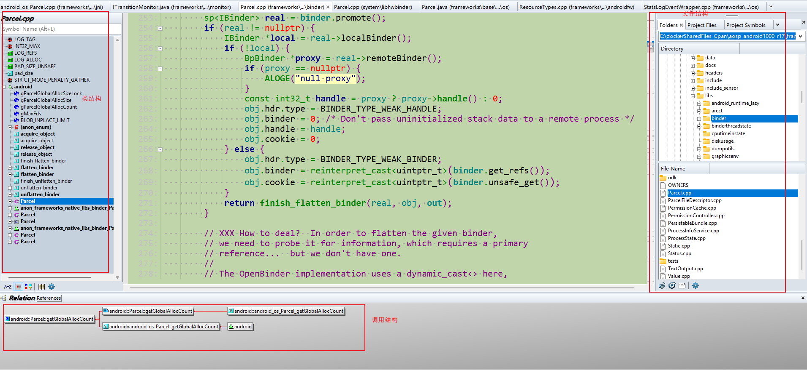
2.6. 搜索
2.6.1. 文本搜索-------当前文件中 Ctrl + F
快捷键：Ctrl + F
缺点： 很慢
优点： 但是各类文件会被搜索得到
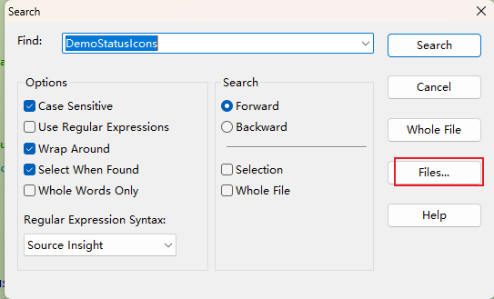
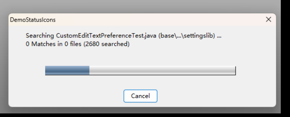
2.6.2. 文本搜索-------全局
2.6.3. 文本搜索------- 在指定路径中
1、先选中要搜索的内容 ---------> ctrl + shift + F
2、填写路径名+ Enter键
3、最后点击search
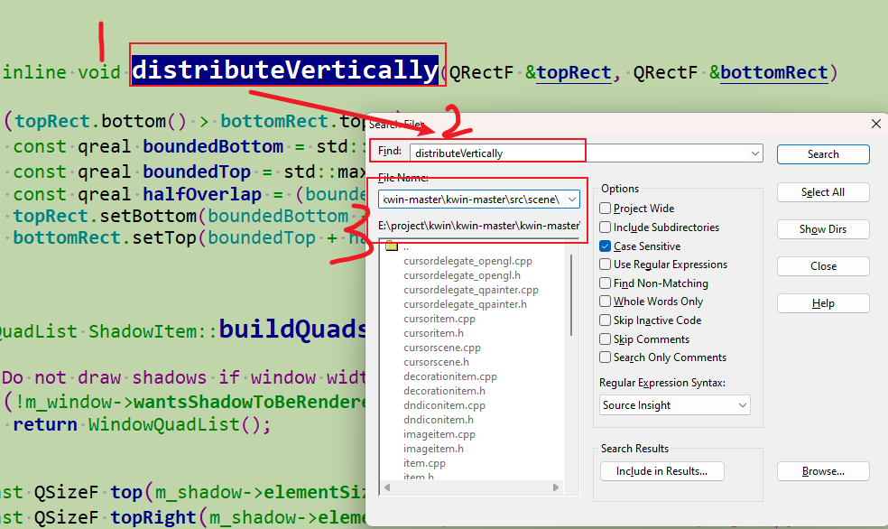
2.6.4. symbols搜索
方法一：优： 1、非常快 2、还可以限制文件
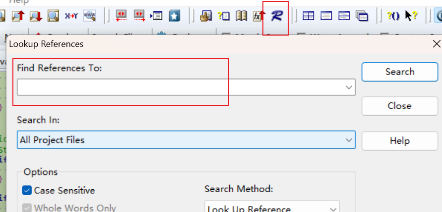
方法二：
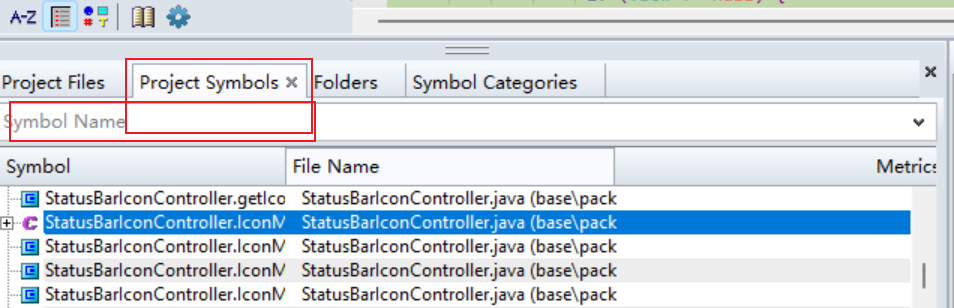
TODO：
两种方法是什么区别呢？
2.6.5. 结果的快速跳转
当前file的跳转：
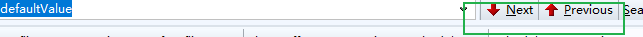
技巧：
搜索结果的快速跳转
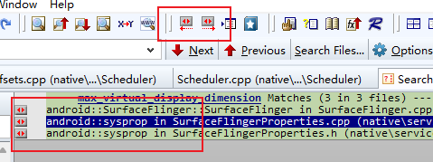
规定快捷键：
设置为F8和F9
2.7. del_替换 Ctrl + R
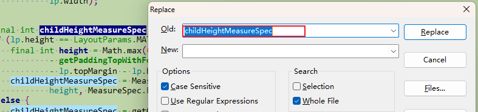
2.8. 搜继承关系：
（1）向上： 搜TouchInputRedirection父类
法一：左键点击TouchInputRedirection --------> 在relation window会显示父类 （优选）
法二：看TouchInputRedirection的.h文件
法三： TouchInputRedirection : public ------> 后: public
（2）向下： 搜InputDeviceHandler子类
法一：优选， 在relation window配置显示 Derived Classes (不能同时看到向上和向下)
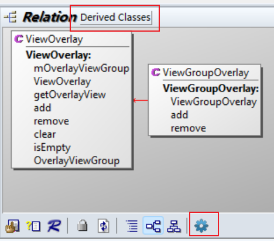
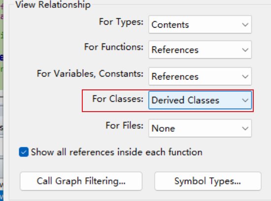
法二： public InputDeviceHandler ------> 前: public
2.8.1. 类的家族图谱
点击树根，会展示所有的Item类的家族图谱：
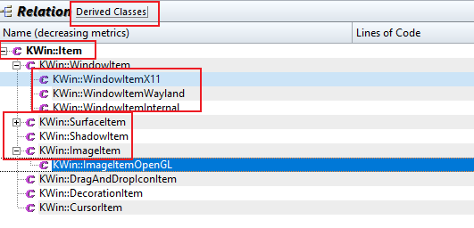
2.9. 搜继承关系（从函数角度）：
方法一： 有时候，索引不全？？？？？ TODO：
站在函数角度，如何看有没有子类去复写？
选中函数：看关联了哪些.h
-------------> 结构上： SectionParser::ParseLineSection 函数 父类、子类的.h 会关联到一起
// \\system\\core\\init\\parser.cpp
方法二：
点击父类，查看子类：
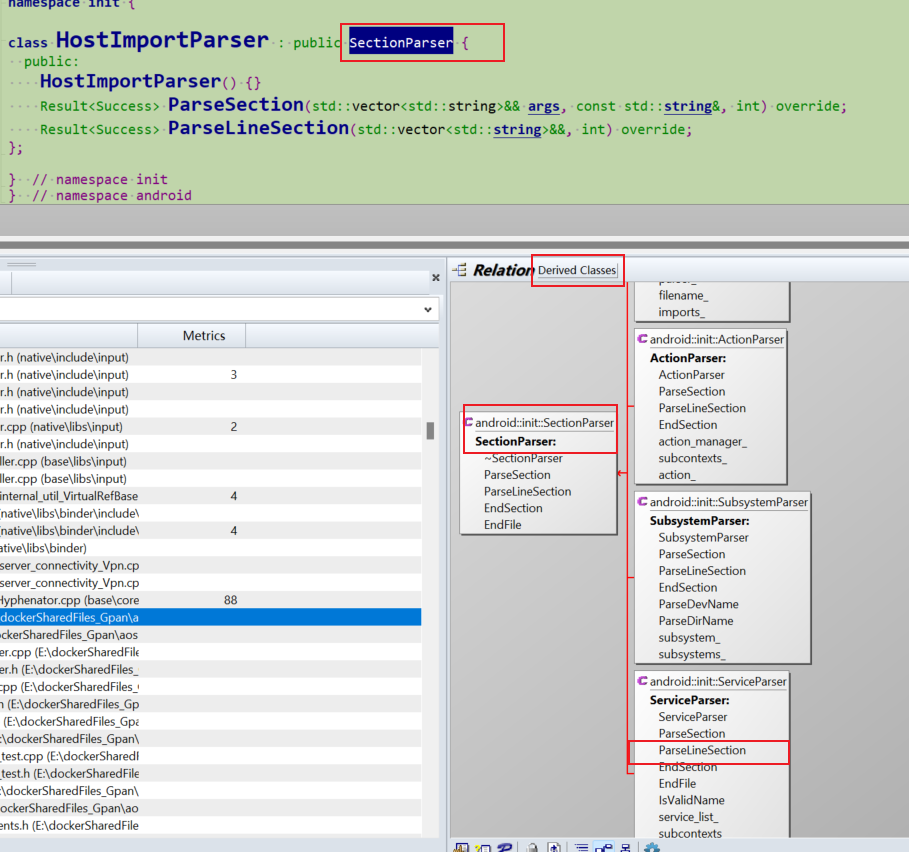
2.10. source insight字体颜色
黑色-----------不可跳转（相当于AS的红色）
2.11. 新版功能：
http://www.sourceinsight.com.cn/feather.html
HierarchyView的实现原理和Android设备无法使用HierarchyView的解决方法
2.12. search Bar保留

2.13. 选中高亮：
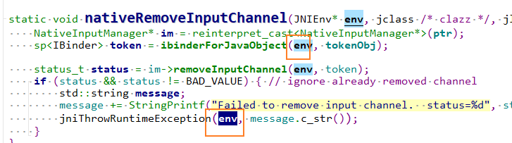
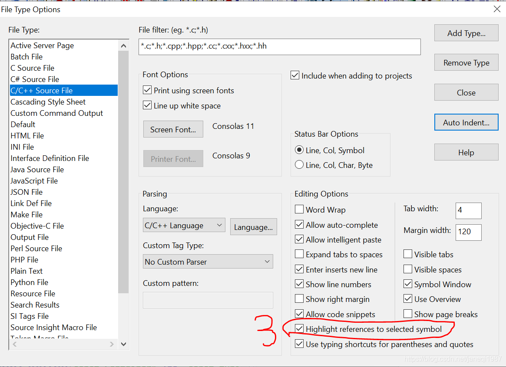
2.14. 高亮多个word
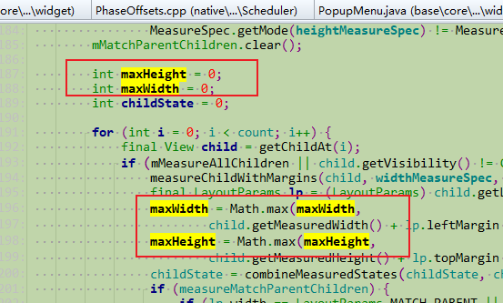
规定快捷键：F1 和 F2
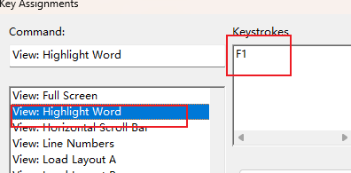
2.15. 快捷键：
文本replace （当前文件）------> 修改为 ctrl + R
全局替换 ----------> 修改为 ctrl + shift + R
close file --------> ctrl + W
copy file path -------> ctrl +shift + c
ctrl + O : open这个window

2.15.1. 多行注释
法一：
Source Insight4.0已有多行注释功能：

注释：ctrl + / 反注释：加shift
法二：利用宏macro
快捷键： ctrl + /
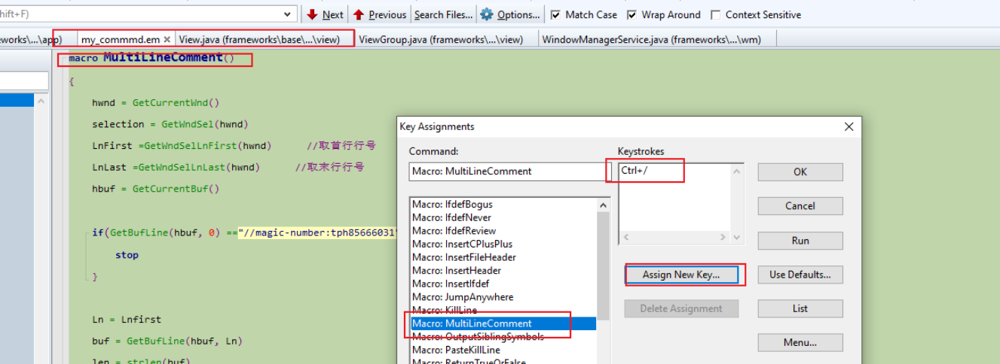
macro MultiLineComment()
{
hwnd = GetCurrentWnd()
selection = GetWndSel(hwnd)
LnFirst =GetWndSelLnFirst(hwnd) //取首行行号
LnLast =GetWndSelLnLast(hwnd) //取末行行号
hbuf = GetCurrentBuf()
if(GetBufLine(hbuf, 0) =="//magic-number:tph85666031"){
stop
}
Ln = Lnfirst
buf = GetBufLine(hbuf, Ln)
len = strlen(buf)
while(Ln <= Lnlast) {
buf = GetBufLine(hbuf, Ln) //取Ln对应的行
if(buf ==""){ //跳过空行
Ln = Ln + 1
continue
}
if(StrMid(buf, 0, 1) == "/"){ //需要取消注释,防止只有单字符的行
if(StrMid(buf, 1, 2) == "/"){
PutBufLine(hbuf, Ln, StrMid(buf, 2, Strlen(buf)))
}
}
if(StrMid(buf,0,1) !="/"){ //需要添加注释
PutBufLine(hbuf, Ln, Cat("//", buf))
}
Ln = Ln + 1
}
SetWndSel(hwnd, selection)
}
参考：
https://it.cha138.com/tech/show-390752.html
https://jingyan.baidu.com/article/90808022d313a2fd91c80f93.html
2.15.2. recent file：
-----> TODO：快捷键一直不生效

退而求其次的方法：
1、File menu是生效的 --------> 修改为CTRL + E
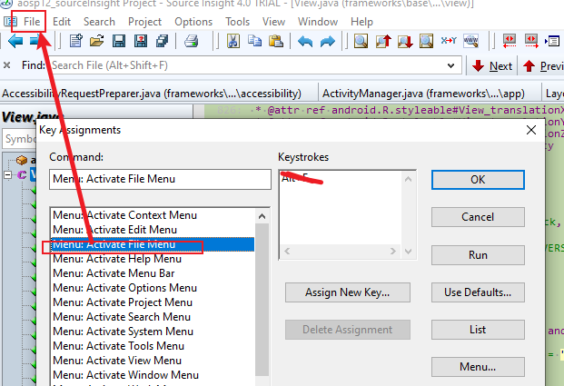
2、把 recent file至于File menu第一个，便可以键盘切换recent file
3、效果：


2.15.3. 查看调用点

或：
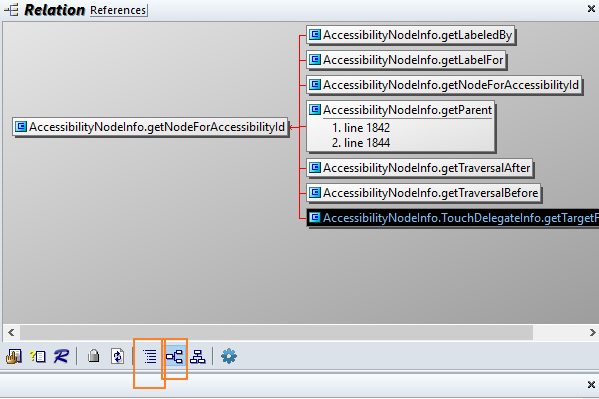
2.15.4. Go Back & Go Forward
Navigation: Go Back : Alt+,, Thumb 1 Click
Navigation: Go Forward : Alt+., Thumb 2 Click
2.15.5. 快捷键设置：
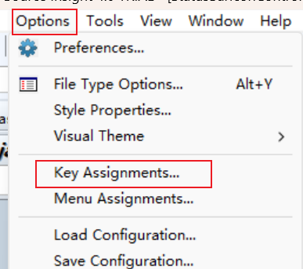
2.15.6. 参考：
https://blog.csdn.net/u010835747/article/details/122859809
https://www.amobbs.com/thread-5718242-1-1.html
https://zhuanlan.zhihu.com/p/33000424
2.16. 查找关键字
如果 关键字是符号 ，比较快 -------> SI之前已经做好了
如果不是，会很慢（比AS慢很多）-------> 可见，AS是加载了所有文件，而SI只是符号表
技巧：
通过左右来遍历搜索结果，不用切换到results文件

2.17. 跳转 之 Bookmarks
修改快捷键：
<item Command="Bookmark..." Keycode="(C)B" />
2.18. 大纲 ------- 代码 相互快速跳转
快速跳转下一个函数：<------------大纲
快速跳转到类 ： <------------大纲
-比AS优的地方： 点击代码，大纲跟随!!!!!!!!!! TODO： 好的设计，可逆
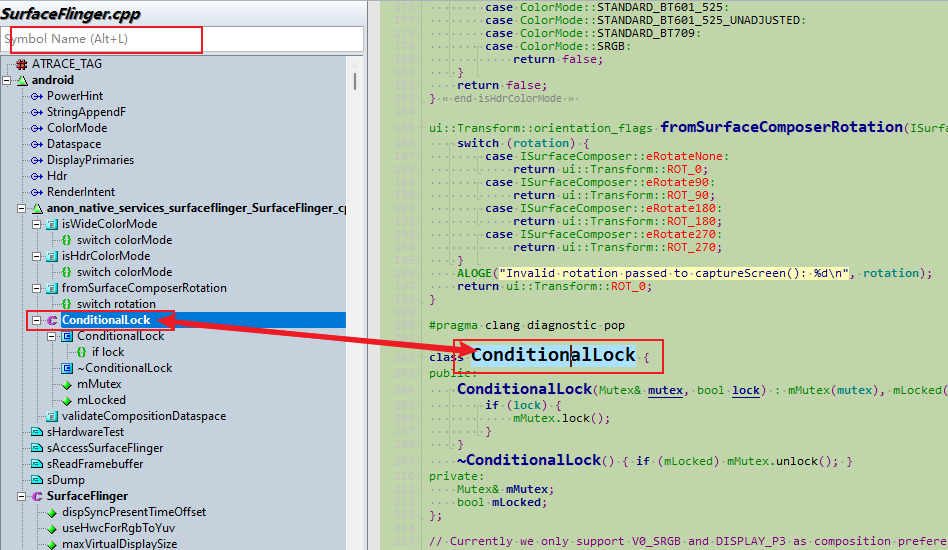
2.19. 大纲------代码------被引用点 三者同步显示
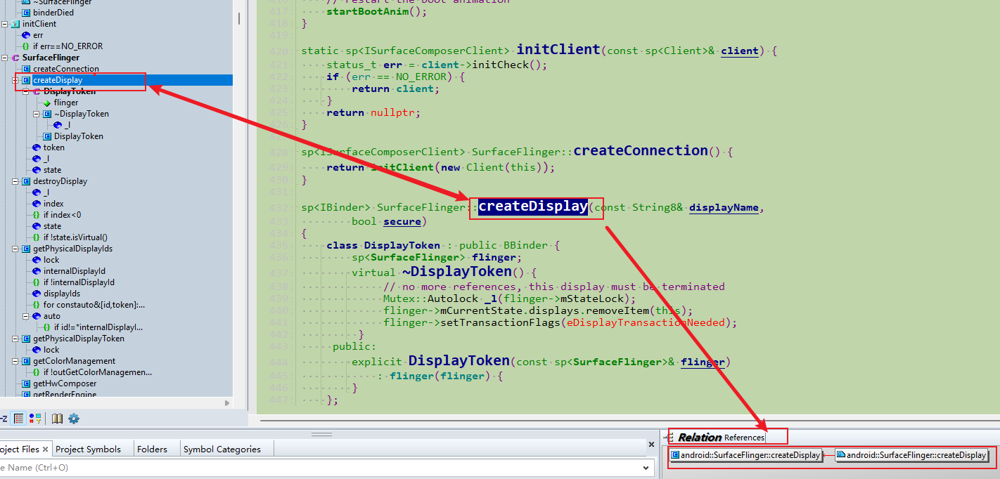
2.20. code大纲-------只看有哪些方法
目的： 更好地看类里有哪些方法
方法：
symbol window --------> 折叠类 --------> 再打开类，方法都被折叠了
双击：
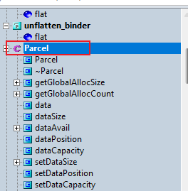
2.21. 代码折叠：
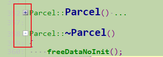
操作：
Options ---> preferences ---> windows ----> Outlining and Nesting ---> show outlining
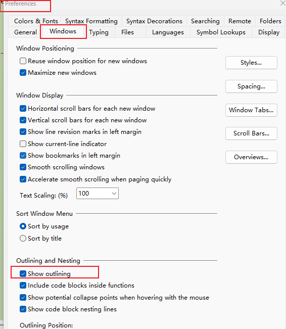
-强制折叠：
有些时候，代码没有主动显示折叠符号，点击：
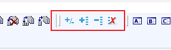
2.22. 调用栈
2.22.1. 调用栈深度
显示2层时，比较优
参考：https://blog.csdn.net/qq_36035382/article/details/126357313
2.22.2. del_化简之调用栈
- 忽略References中.h定义文件：
relation window 调用树中：
根据图标不同，忽略.h 中定义处的调用 （自然，整个分支都化简掉）
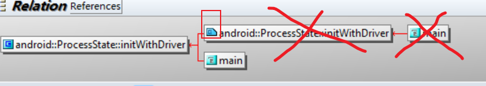
尽量用list --------> 显示得更多：
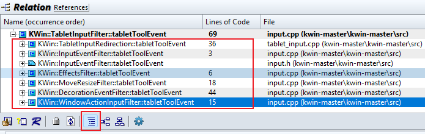
2.22.3. 锁定调用栈，锁定关注：
Relation window锁定-------关注点放在重点的调用栈上
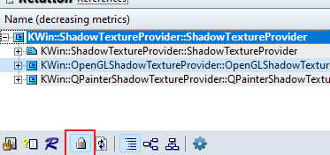
2.23. 关闭overview

2.24. 查看当前文件所处的位置
打开同级其他文件，也很方便
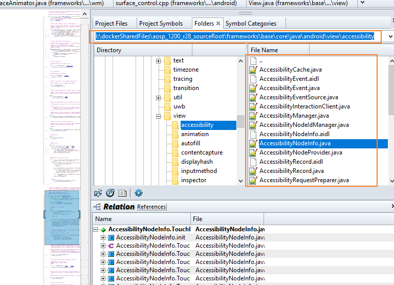
2.25. del_安装
2.25.1. Source Insight 试用过期，激活
参考：https://www.jianshu.com/p/0dd919d660a3
方法：
修改激活日期，修改为当天，然后就可以再用90天了
修改C:\ProgramData\Source Insight\4.0的si4.lic

2.26. 保存-----最优界面 和 设置
layout保存xml
设置保存：Options -----> Loading configuration
2.27. 编辑格式：
2.28. 新版功能：
http://www.sourceinsight.com.cn/feather.html
2.29. 参考：
https://www.dandelioncloud.cn/article/details/1578906401210855426 Source Insight 使用教程(2)——常用功能
3. TODO
3.1. 无法识别cpp STL标准库：------> 似乎无法解决
现象：
所有的std，比如vector等，都是黑的
尝试：
添加到source 或者 import External Symbols
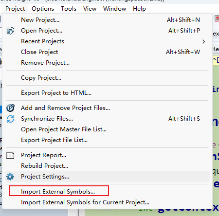
参考：
source insight 无法识别，跳转，补全 c++ std::map
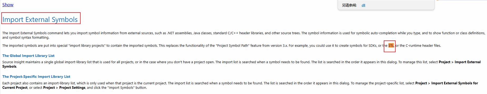
4. 基本设置：
4.1. Tab 键为4个空格
Tab width:4
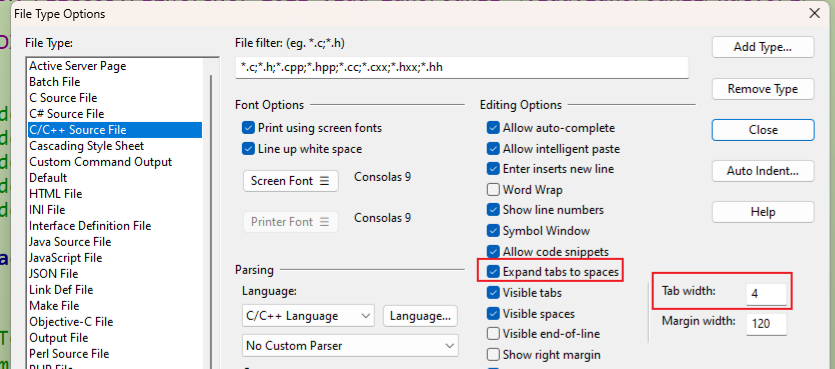
4.2. 换行符改为unix/linux格式：
1：Option->Prefernces->Files
2：在倒数第二行的Default line ending选择Uinx(LF)
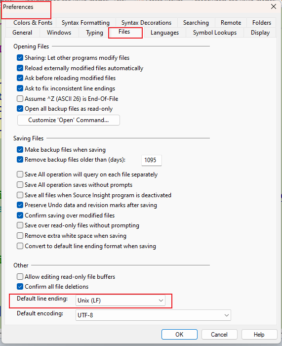
4.3. 背景色设置
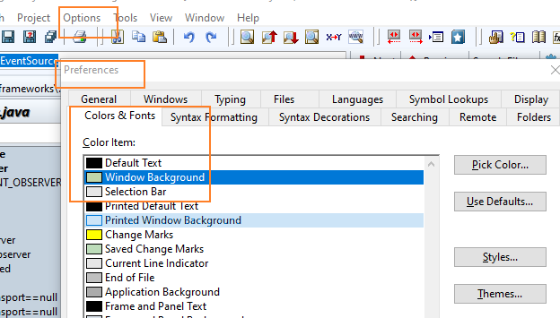
5. del_linux下使用 Source Insight
参考：https://juejin.cn/s/linux source insight
----------> 验证ok
1、安装wine
sudo apt-get install wine-stable=3.0-1ubuntu1
2.使用wine安装Source Insight 4.0
//（1） copy linux的安装包 sourceinsight40107-setup.exe到linux
//（2）linux内
wine sourceinsight40107-setup.exe
3、打开：
cd ~/.wine/drive_c/Program\\ Files\\ \\(x86\\)/Source\\ Insight\\ 4.0
wine sourceinsight4.exe
借助wine，运行win下的 软件
参考：https://www.sysgeek.cn/ubuntu-wine/ ---------> 好文
字体修改：
1、source Insight字体的设置：
一定要是西文
在 Ubuntu 上安装和使用 Wine，轻松运行 Windows 应用程序 - 系统极客 (sysgeek.cn) ----------> 非常优的文章
-规定：
路径里（安装路径、工程路径），无论win、linux！！！！！：
不允许有空格 & 中文 ！！！！ ---------> 害死人！！！！！